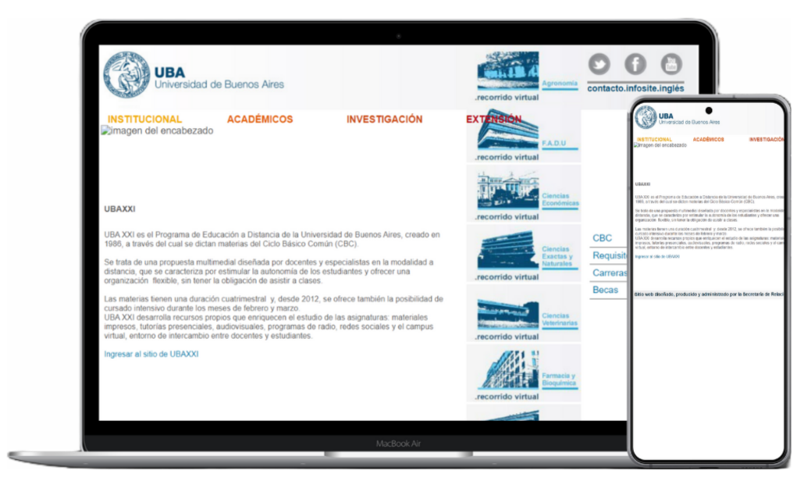

Rebuilding a University Website
For this personal portfolio project, I rebuilt a broken and outdated webpage of the University of Buenos Aires (UBA) and their UBAXXI curriculum.
If you wish to jump right into the results, click on the buttons below:
If you wish to check a small breakdown of what I took in consideration when re-designing it, keep reading!
This is what the original website looked like when I found it:
And these were my notes at a glance:
- It has PHP and Jquery elements.
- It's outdated and not responsive.
- It's not accessible. Font sizes are far from ideal.
- Elements overlap and the UI is overall quite confusing.
- Many links and an image are broken.
- The color palette is not consistent.
Based on my notes, I worked on a non-functional single-page sample to show how I would clean up, simplify, and re-design the page:

Reconstruyendo el Sitio Web de una Universidad
Para este proyecto de mi portfolio personal, reconstruye una página web desactualizada y defectuosa del programa UBAXXI de la Universidad de Buenos Aires (UBA).
Si deseas ir directo a los resultados, clickea en los botones a continuación:
Si prefieres un breve desglose de las consideraciones que tomé al resideñarlo, ¡continúa leyendo!
Así es cómo se veía el sitio original cuando lo encontré:
Y estas fueron mis anotaciones a primera vista:
- Contiene elementos de PHP y Jquery.
- Está desactualizada y no es responsive.
- No es accesible. Los tamaños de las fuentes no son ideales.
- Los elementos se superponen entre sí y la UI resulta confusa.
- Muchos enlaces y una imagen se encuentran rotos.
- La paleta de colores no es consistente.
Basándome en mis anotaciones, desarrollé una página no funcional de muestra para mostrar como limpiaría, simplificaría y rediseñaría la página: